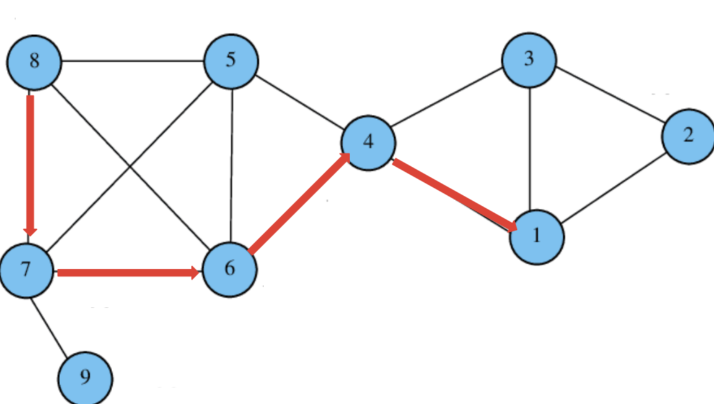
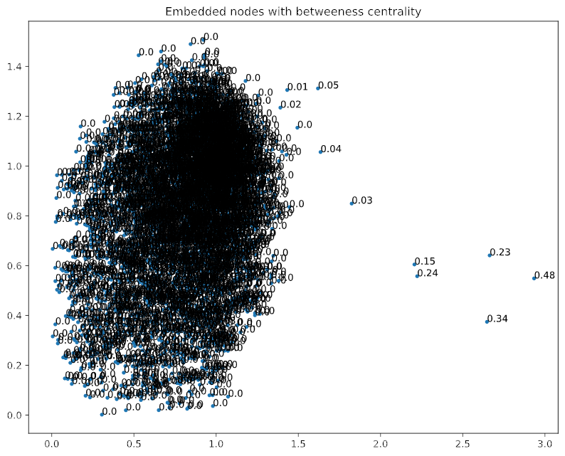
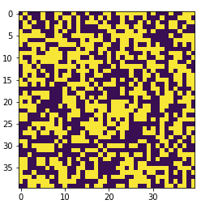
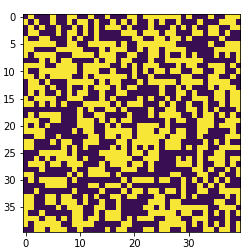

Estimating the Betweenness Centrality of Nodes with Network Embedding
In graph theory, a key area is to estimate the importance of specific nodes in a network. This is usually done with a centrality measure. There are many different types of these centrality measures and they can be classified under the following categories (among others):
- Degree Centrality;
- Eigenvector Centrality
- Closeness Centrality;
- Shortest path Centrality;
- Group Centrality.
- Choose two random nodes in the network;
- Preforme multiple weighted random walks on the network for both of the selected nodes, such as in the figure on the right;
- Order all visited nodes by their frequency of appearing an all of these random walks for both starting nodes;
- Move embedded nodes closer to eachother in the embedding space which appeared with a similar frequency.
 Extensive testing of this method has shown that the approximation is only accurate for large and complex real world networks. For small uncomplicated graphs, there just is not enough information present for the algorithm to perform a good enough approximation. In addtion, the algorithm has shown to not be able to effectively accurately approximate the betweenness centrality for scale free synthetic random graphs. However, this is not a big problem, as for small networks with low mean degree, approximation does not make sense anyway, as the exact centrality can be computed very easily. Furthermoe, applications to synthetic random graphs which in most cases do not represent any attributes from real world graphs is also not important. Applications to very large and complecated real world networks is what is important, which the algorithm is able to handle.
 The algorithm has amoung others been tested on a dataset provided by Facebook. It consists of 'circles' (or 'friends lists') from Facebook. The data was gathered from individual survey participants using the Facebook app. This network includes 4039 and 88234 edges. In the figure on the left you can see a graph of the notes present in the dataset embedded into 2 dimensions. The numbers next to each dot represent the exact betweenness centrality. The algorithm has quite nicely isolated nodes with a high centrality. In this case it can clearly be seen that more "important" nodes are located further to the right. All the "unimportant" nodes with a centrality close to 0 are clumped together in a big pile on the left. This means that on this real world data set, the algorithm has been able to identify the most central nodes present in the network. In addtionion, by choosing the right hyperparamethers, the algorithm was a lot faster than the exactl calculation.
All in all, it can be said that generally the algorithm is successful for huge and complex real world (scale free) graphs, while applications to small, simple and non scale free graphs is limited. Important nodes which act as hubs in the network are alomst always accuratly identified and isolated from unimportant nodes in the embedding space.
Classification of the Ising Model
 
In statistical physics, modelling physical systems is a major component. The Ising model, named after the physicist Ernst Ising,
is such a mathematical model to ferromagnetism (the machanism of permanent magnets). A dicrete variable that describes the magnetic dipole (the spin) describes the model.
The possible values of this variable are either spin up or spin down identified as +1 or -1.
The variable is placed on a graph, in this case on a 2 dimensional lattice. On the left you can see two examples of this.
Yellow represent a spin of +1, while purple represent -1.
The model is dynamic and each spin interacts with its direct neighbors.
Neighboring spins that have the same value, have a lower energy than those that disagree.
Similarly to an object falling of a table, every physical sytem tends to move to its lowest energy state, given enough time.

In statistical physics, modelling physical systems is a major component. The Ising model, named after the physicist Ernst Ising,
is such a mathematical model to ferromagnetism (the machanism of permanent magnets). A dicrete variable that describes the magnetic dipole (the spin) describes the model.
The possible values of this variable are either spin up or spin down identified as +1 or -1.
The variable is placed on a graph, in this case on a 2 dimensional lattice. On the left you can see two examples of this.
Yellow represent a spin of +1, while purple represent -1.
The model is dynamic and each spin interacts with its direct neighbors.
Neighboring spins that have the same value, have a lower energy than those that disagree.
Similarly to an object falling of a table, every physical sytem tends to move to its lowest energy state, given enough time.
The probablitiy of a spin randomly changing is directly proportional to the temperature of the system. Because of this, the system tends to the lowest energy but heat disturbs this tendency, thus creating the possibility of different structural phases. This can again be seen by the two figures, on the left a cold and nicely ordered state can be seen. On the right the system is hot and kaotic. The question now is, how efficiently can an AI differentiate these two states and how much information can be thrown away for an AI to still efficiently distinguish them? As it turns out very little information is required to efficiently classify a given dataset. The following machine learning algorithms were implemented:
- Classification with mostly Dense Layers.
- Classification with a convolutional architecture.
- Random Forest classifier.
Key Impact Factors of Carbon Emissions
Climate change is one of the biggest challenge humanity has ever faced.
In recent years mitigation efforts all around the globe have ramped up.
These efforts, however, have not been successful.
This research combines the Kaya identity used to decompose carbon emissions into various
factors and panel data analysis to extract the key impact factors on the changes in the
growth of carbon emissions. Data from 120 different countries and territories from 1961 until 2015
have been used.
What is the Kaya identity?
To analyse and understand the changes in carbon emissions, the most popular tool used in literature is
the Kaya identity. This tool has been used in most major analysis on carbon emissions.
It very simple equation takes 4 factors into and links them to carbon emissions:
$$F = P \times \frac{G}{P} \times \frac{E}{G} \times \frac{F}{E}$$
In this equation,
- \(F\) represents $CO_2$ emissions from human sources,
- \(P\) represents population,
- \(G\) represents GDP,
- \(E\) represents energy consumption.
| Name | Description |
|---|---|
| \(\Delta P_{(i,t)}\) | Population growth in %. |
| \(\Delta (\frac{G}{P})_{(i,t)}\) | Change in GDP per capita in %. |
| \(\Delta Ex_{(i,t)}\) | Change in exports in %. |
| \(\Delta (\frac{E}{G})_{(i,t)}\) | Change in energy efficiency in %. |
| \(\Delta ( \frac{F}{E})_{(i,t)}\) | Change in carbon intensity in %. |
| \(Gi_{(i,t)}\) | Gini index measuring income inequality. |
| \(e_{(i,t)}\) | Error term. |
| \(a - h\) | Coefficients for the fit. |
 This means that in this research, the change in carbon emissions has been linked to all the factors described in the table aboth.
The results show that changes in technology have the strongest global effects,
consequently followed by changes in population growth and affluence. Finally, the impact of
income inequality on the change of carbon emissions is only relevant in high income nations. This can be seen very nicley with the picture on the left. There is no significance for income inequality for less wealthy nations,
while developed and rich nations show a connection.
This means that in this research, the change in carbon emissions has been linked to all the factors described in the table aboth.
The results show that changes in technology have the strongest global effects,
consequently followed by changes in population growth and affluence. Finally, the impact of
income inequality on the change of carbon emissions is only relevant in high income nations. This can be seen very nicley with the picture on the left. There is no significance for income inequality for less wealthy nations,
while developed and rich nations show a connection.
These results have some important policy implemented to effectifely tackle the problem of carbon emissions:
Obviously very few nations are willing to decrease their economic output to reduce carbon emission. Countries are only willing to participate in carbon mitigation efforts, if the total welfare of a nation increases. Currently the welfare of a nation is highly dependent on economic growth. Because of this, decreases in the growth of carbon emissions must be driven from different areas. To reduce the growth of carbon emissions, without affecting economic productivity, first and foremost the problem of population growth has to be tackled especially in developing countries. Technological advancements and economic growth are less important, but certainly still important. The Kyoto protocol and the Paris agreement both already have provisions of developed nations (Annex 1 countries) pledging to help developing nations (Annex 2 countries) to improve technological advancements. The focus here should be on improving energy efficiency. This mean that more funds should be put in to decreasing the amount of carbon that is produced for every unit of economic output. This can be done by decreasing the amount of energy machinery in manufacturing need (increase efficiency). Investments into renewable energy are less important in changing the direction of growth in carbon emissions due to the coefficient of carbon intensity being significantly smaller. Finally, for low income countries, counter intuitively it is more important to increase the average income of the population. Before all the basic needs are met, no focus on pro environmental actions can be taken. Once poverty is eradicated, income inequality can be tackled to decrease the growth of carbon emissions. However, at least in the context of climate change, improving income inequality will not help in the mitigation of carbon emissions. In high income countries, population growth is already almost constant and due to the fact that countries are not willing to decrease their economic output, technological advancements and social factors would have to be worked on. Conveniently, the key impact factor on change in carbon emission in high income countries is technology. As mentioned before, the focus should be put in decreasing the amount of carbon that is emitted from every unit of economic output. This can be combined with knowledge and technological advancements with developing nations, for them to also improve. Finally, tackling income inequality in very rich nations might also help to reduce the growth carbon emission.